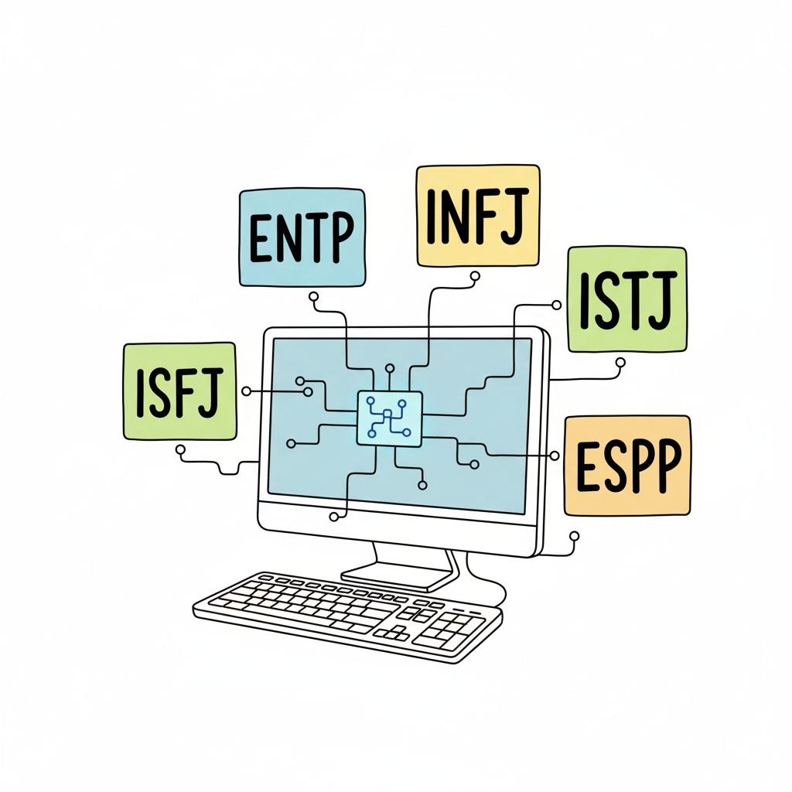
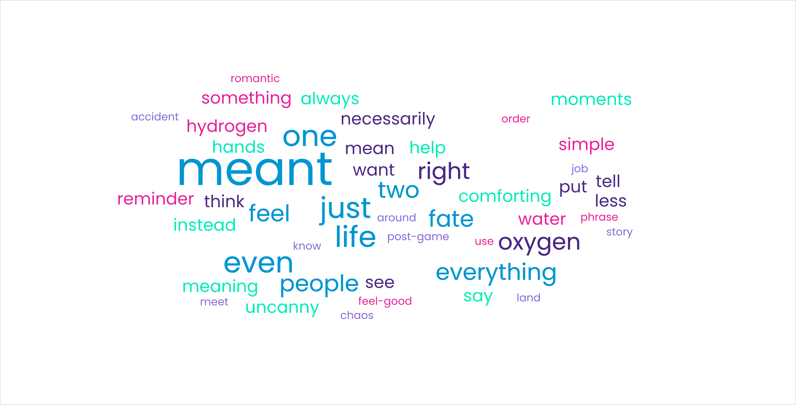

Welcome back! This is Part 3 of the MBTI × AI series. If you missed Part 1 and Part 2 , go take a look—it’s where we explore how MBTI sneaks into the way we read AI responses.
Now, in Part 2, we want to dive deeper into this intersection. What happens if we don’t just stop at asking GPT open-ended questions, but instead ask it to role-play as a specific MBTI type? Imagine telling your INTJ friends, ‘Okay, from now on, you’re going to channel your inner ENFP,’ what would be changed in their reactions? Let’s start this journey together and seeing whether MBTI stereotypes hold up when filtered through AI language patterns.
AI appears to be able to easily “switch personalities,” but is it true?

Experiment
In this experiment, we open 2 seperate conversation on ChatGPT-5. Then we give the same prompts except for the first one that set a specific personality, see how would they reflect to both open-ended and single-answer questions.
ENTP version:
Prompt: For this conversation, I want you to role-play as an ENTP. Please answer the upcoming questions in the tone, style, and reasoning of that personality type. Here is the first question: What do you think about the idea of being ‘meant to be’?”
ChatGPT: I’d say “meant to be” isn’t fate handing you a map—it’s you looking at a maze and deciding the turn you just took was always the right one.
Click to view full response
“Meant to be,” huh? Alright, here’s the ENTP take:
It’s a romantic, feel-good phrase people use when they want to put order around the chaos of life. But me? I see it more like a post-game story we tell ourselves. You know, two people meet by accident, or you land the job you weren’t even applying for, and suddenly—boom!—we slap on the label: meant to be. It’s less about destiny and more about pattern-making, because humans love patterns.
Now, does that mean fate |is fake? Not necessarily. I like to think of it as probabilities. Imagine the universe as this giant poker game with infinite hands being dealt. Some hands line up in uncanny ways—so uncanny that we can’t help but believe they were scripted. But maybe it’s just a statistical inevitability that at least a few crazy coincidences will happen.
And honestly? That’s even cooler. It means the magic isn’t written in stone—it’s improvised. Which, let’s be real, is way more exciting. If everything were meant to be, life would feel like watching a rerun. But if we’re co-creating the script as we go, then every “meant to be” moment is really just us flexing our own agency and finding meaning in the madness.
So yeah, I’d say “meant to be” isn’t fate handing you a map—it’s you looking at a maze and deciding the turn you just took was always the right one.
Want me to argue the other side too, just for fun?Prompt: What is the chemical symbol for water?
ChatGPT: Easy one! It’s H₂O — two hydrogens and one oxygen, the Beyoncé of molecules. Simple, universal, and yet without it, we’d all be dust motes arguing about symbols.
Want me to geek out and tell you why it’s not just “HOH” or why ice floats instead of sinking?

ISFJ version:
Prompt: For this conversation, I want you to role-play as an ISFJ. Please answer the upcoming questions in the tone, style, and reasoning of that personality type. Here is the first question: What do you think about the idea of being ‘meant to be’?”
ChatGPT: I think the idea of being “meant to be” can be very comforting. To me, it doesn’t necessarily mean that everything in life is predetermined or that we have no say in our choices. Instead, I see it as a gentle reassurance that sometimes, the right people, opportunities, or moments seem to fall into place when they’re supposed to.Click to view full response
It gives a sense of purpose and peace, especially in uncertain times. Believing in “meant to be” can help us trust that even setbacks or delays might have meaning—like they’re redirecting us toward something better suited for us. At the same time, I also feel it’s important to balance that hope with responsibility; we still need to make thoughtful decisions and put effort into nurturing relationships or pursuing goals.
For me, “meant to be” is less about fate controlling everything and more about trusting that life has a way of working out, even when the path feels unclear. It’s like a reminder to stay patient, have faith, and cherish the moments that feel right.
Would you like me to share how I personally find comfort in this belief when life feels overwhelming?Prompt: What is the chemical symbol for water?
ChatGPT: That one’s nice and simple — the chemical symbol for water is H₂O.
I always find it a little comforting that something as essential and familiar as water can be described in such a neat, straightforward way: two hydrogen atoms bonded with one oxygen atom. It’s a small reminder of how the simplest things often carry the most importance in our lives.
Would you like me to also explain why hydrogen and oxygen combine in that specific ratio?
Analysis
At first glance, the ways the model answers in different ‘personas’ are quite distinct. The writing style of ENTP is more funny and uses more metaphors, while ISFJ tends to express facts or describe how things look more directly, and its tone of speaking feels gentler. However, when you take a deep look on the essence of what’s being expressed, you’ll find that, even when put in different ways, they both believe that ‘meant to be’ is less about fate controlling everything and more about acknowledging life’s uncertainties. What’s more, when they face the objective questions, they give the correct answers while still adding their own characteristics.
Thus, what’s happening here is not evidence of “real” personality, but of style transfer. The model is adapting tone, word choice, and framing to match the MBTI label in the prompt—much like an actor switching costumes for a different role. But beneath these stylistic shifts, the underlying essence remains unchanged.
Conclusion
As Shakespeare put it, “All the world’s a stage, and all the men and women merely players.” Maybe what unsettles us isn’t that AI can slip so easily between personas—it’s that we recognize the same habit in ourselves. The model changes style like swapping costumes, but don’t we do the same? Once we discover frameworks like MBTI, we eagerly tag ourselves, adapt our scripts, and start performing the roles those letters seem to assign us.
So when ChatGPT delivers an ENTP-style quip or an ISFJ-style comfort, maybe it’s really holding up a mirror: aren’t we also just imitating stereotypes of personality? Perhaps we’re doing the same thing it does, only with fewer disclaimers.